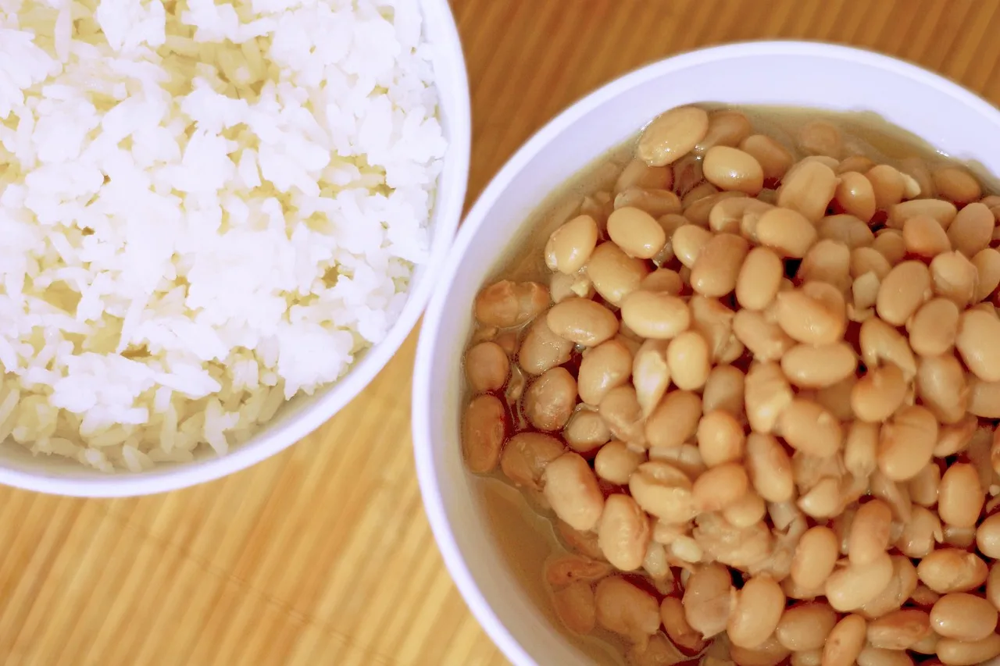

Como fazer arroz soltinho e feijão macio
Proporção de água, tempo de cozimento e truques para arroz branco soltinho e feijão macio e encorpado na panela de pressão — o prato mais brasileiro de todos.

Arroz e feijão estão no prato de quase todos os brasileiros e, justamente por isso, são os primeiros pratos que todo mundo quer acertar. A boa notícia: com a proporção certa e alguns cuidados, eles saem perfeitos todos os dias.
Arroz branco soltinho
Proporção: 1 xícara de arroz agulhinha tipo 1 para 2 xícaras de água fervente (rende 3 a 4 porções).
- Lave o arroz em uma peneira até a água sair quase transparente — isso remove o excesso de amido que deixa o arroz grudento. (Arroz parboilizado não precisa ser lavado.)
- Refogue 1 colher de sopa de óleo com ½ cebola e 1 dente de alho picados até murchar.
- Junte o arroz escorrido e frite por 2 minutos, mexendo, até os grãos ficarem esbranquiçados.
- Acrescente a água fervente e 1 colher de chá rasa de sal. Quando ferver de novo, baixe o fogo, tampe deixando uma fresta e cozinhe por 15 a 18 minutos.
- Quando a água secar e aparecerem furinhos na superfície, desligue, tampe totalmente e deixe descansar por 5 minutos antes de soltar com um garfo.
| Tipo de arroz | Água por xícara | Tempo |
|---|---|---|
| Agulhinha (branco) | 2 xícaras | 15–18 min |
| Parboilizado | 2 a 2½ xícaras | 20–25 min |
| Integral | 2½ a 3 xícaras | 35–45 min |
| Arbóreo (risoto) | 3 a 4 xícaras de caldo, aos poucos | 18–20 min |
| Basmati | 1½ xícara | 12–15 min |
Feijão na panela de pressão
Proporção: 2 xícaras de feijão para cerca de 6 xícaras de água (a água deve cobrir o feijão dois dedos acima). Nunca ultrapasse 2/3 da capacidade da panela de pressão.
- Escolha os grãos, retirando pedrinhas e grãos murchos, e lave bem.
- Deixe de molho por 8 a 12 horas e descarte a água — isso reduz o tempo de cozimento e ajuda na digestão.
- Cozinhe com água limpa e 2 folhas de louro: 25 a 30 minutos após pegar pressão para carioca e preto demolhados (sem molho, 40 a 50 minutos).
- Espere a pressão sair naturalmente. Confira se os grãos estão macios.
- Tempero: frite bacon ou linguiça (opcional), junte alho e cebola, acrescente duas conchas do feijão, amasse e devolva à panela. Ferva sem tampa por 10 minutos para engrossar e acerte o sal.
| Feijão | Com molho (pressão) | Sem molho (pressão) |
|---|---|---|
| Carioca | 20–25 min | 35–40 min |
| Preto | 25–30 min | 40–50 min |
| Fradinho | 10–15 min | 20–25 min |
| Branco | 20–25 min | 35–45 min |
| Grão-de-bico | 25–30 min | 45–60 min |
| Lentilha | Não precisa de pressão: 20 min em panela comum |
Erros mais comuns
- Arroz empapado: excesso de água ou mexer durante o cozimento.
- Arroz cru por dentro: fogo alto demais secou a água antes do grão cozinhar. Junte ¼ de xícara de água quente e tampe.
- Feijão duro: feijão velho (mais de 6 meses) demora muito mais. Sal no início também pode endurecer a casca.
- Feijão aguado: amasse uma concha de grãos e ferva destampado.
Feijão cozido congela muito bem por até 3 meses: faça uma panela grande e separe em potes para a semana.
Conteúdo informativo, revisado pela equipe editorial do Clube da Receita. Prazos e temperaturas são referências gerais; siga sempre as orientações do rótulo e, em caso de dúvida sobre segurança dos alimentos, descarte.
← Voltar ao caderno